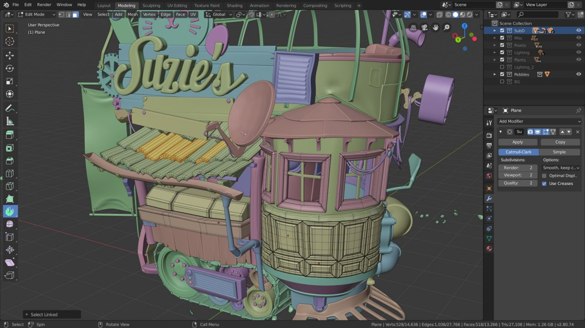
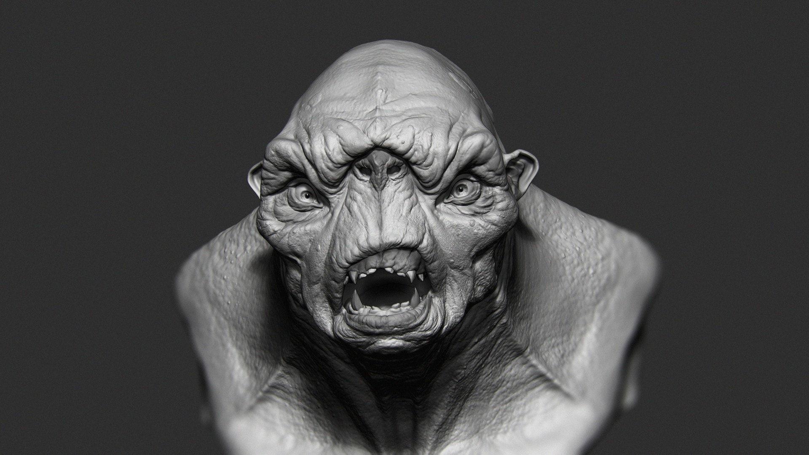
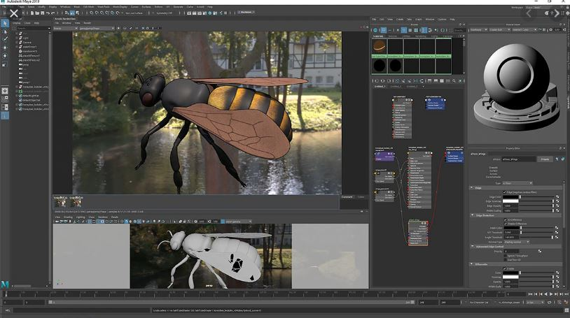
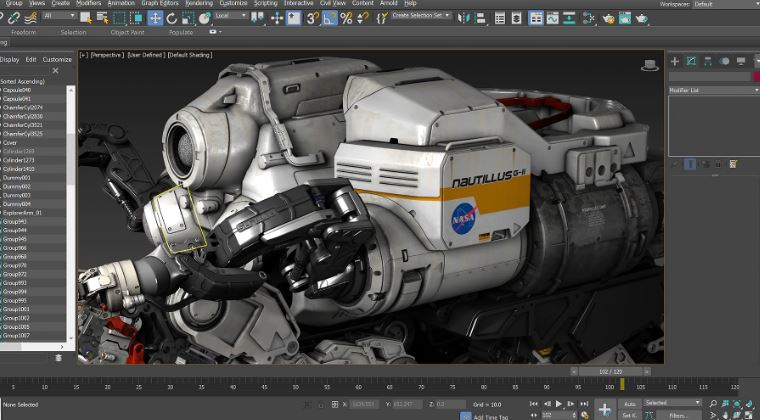

Por onde começar?
Softwares

Fonte: https://www.blender.org/
Blender 3D
Blender 3D é um software gratuito open source focado em criações 3D, este software é capaz realizar várias etapas da modelagem 3D, Da escultura até o rigging além de ser capaz de trabalhar com animação 2D e 3D.

Fonte: https://flippednormals.com/downloads/introduction-to-zbrush-2020/
Zbrush
Zbrush é um dos softwares de modelagem mais usados no mercado.Este é um software profissional onde o foco é na criação de esculturas

Fonte: https://www.autodesk.com.br/products/maya/overview?plc=MAYA&term=1-YEAR&support=ADVANCED&quantity=1
Maya
Maya é o software 3D mais popular entre os estúdios e é nesse software onde muitos filmes de animação são desenvolvidos

Fonte: https://www.autodesk.com.br/products/3ds-max/features?plc=3DSMAX&term=1-YEAR&support=ADVANCED&quantity=1
3ds Max
3dsmax e Maya são dois softwares extremamente similares ja que ambos são desenvolvidos pela mesma empresa, porém esse software tem um foco menor em animação 3D.
Aprendizado
Existem diversos locais onde você pode aprender modelagem 3D, como o youtube onde existem milhares de videoaulas e cursos gratuitos, ou na Udemy, onde você pode comprar vários cursos diferentes que vão ajudar você a melhorar suas habilidades em modelagem 3D
Segue exemplos de cursos online gratuitos que ensinam modelagem 3D
curso de modelagem 3D para iniciantes do vídeo vertigo
Tutorial de Blender feito por Héber Simeoni
Tutorial de Blender feito por André Macedo